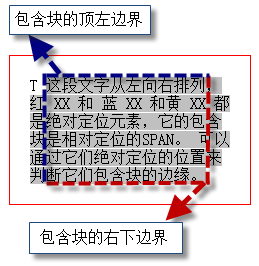
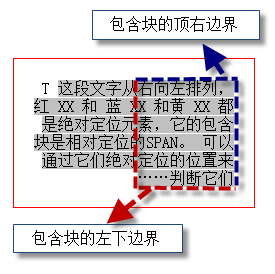

KB008: 包含块( Containing block )
包含块简介
在 CSS2.1 中，很多框的定位和尺寸的计算，都取决于一个矩形的边界，这个矩形，被称作是包含块( containing block )。 一般来说，(元素)生成的框会扮演它子孙元素包含块的角色；我们称之为：一个(元素的)框为它的子孙节点建造了包含块。包含块是一个相对的概念。
<div>
<table>
<tr>
<td>hi</td>
</tr>
</table>
</div>
以上代码为例，DIV 和 TABLE 都是包含块。DIV 是 TABLE 的包含块，同时 TABLE 又是 TD 的包含块，不是绝对的。
“一个框的包含块”，指的是“该框所存在的那个包含块”，并不是它建造的包含块。比如，上述代码中，TABLE 的包含块，说的是 DIV 建造的包含块，而不是 TABLE 自身建造的包含块。TABLE 建造的包含块，可以称作 TD 的包含块。
每个框关于它的包含块都有一个位置，但是它不会被包含块限制；它可以溢出(包含块)。包含块上可以通过设置 'overflow' 特性达到处理溢出的子孙元素的目的。
包含块的概念很重要，因为可视化格式模型中很多的理论性知识都跟这个概念有关系，比如，宽度高度自动值的计算，浮动元素的定位，绝对定位元素的定位等等。不了解包含块，就掌握不好以它为基础的后续理论。
包含块判定及其范围
由上面内容可知，元素框的定位和尺寸与其包含块有关，而元素会为它的子孙元素创建包含块。
那么，是不是说，元素的包含块就是它的父元素呢？包含块的区域是不是父元素的内容区域呢？ 答案是否定的。此节中，将给出各类元素包含块的判断以及包含块的区域范围。 如果不存在符合判断标准的祖先元素，那么元素的包含块就是初始包含块。
包含块判定总流程图如下：

根元素
根元素，就是处于文档树最顶端的元素，它没有父节点。
根元素存在的包含块，被叫做初始包含块 (initial containing block)。具体，跟用户端有关。
- 在 (X)HTML 中，根元素是 html 元 素（尽管有的浏览器会不正确地使用 body 元素）。
- 而初始包含块的 direction 属性与根元素相同。
静态定位元素和相对定位元素
如果该元素的定位（position）为 "relative" （相对定位）或者 "static"（静态定位），它的包含块由它最近的块级、单元格（table cell）或者行内块（inline-block）祖先元素的 内容框1创建。
元素如果未声明 'position' 特性，那么就会采用 'position' 的默认值 "static"。
<table id="table1">
<tr>
<td id="td1">
<div id="div1" style="padding:20px;border:1px solid red;">
<span>
<strong id=”greed” style="position:relative;">greed is</strong>
good 999999
</span>
</div>
</td>
</tr>
</table>
包含块关系表：
| 元素 | 包含块 |
|---|---|
| table1 | body |
| td1 | table1 |
| div1 | td1 |
| greed | div1 |
SPAN 元素中包含的文本在 div1 中的位置可以看出，div1 创建的包含块的区域是它的内容边界，也就是内边界。
固定定位元素
如果元素是固定定位 ("position:fixed") 元素，那么它的包含块是当前可视窗口2。
绝对定位元素
总的来说，绝对定位（"position: absolute"）元素的包含块由离它最近的 'position' 属性为 'absolute'、'relative' 或者 'fixed' 的祖先元素创建。
如果其祖先元素是行内元素，则包含块取决于其祖先元素的 'direction' 特性
1). 如果 'direction' 是 'ltr'，包含块的顶、左边是祖先元素生成的第一个框的顶、左内边距边界(padding edges) ，右、下边是祖先元素生成的最后一个框的右、下内边距边界(padding edges)
示例代码：
<p style="border:1px solid red; width:200px; padding:20px;">
T
<span style="background-color:#C0C0C0; position:relative;">
这段文字从左向右排列，红 XX 和 蓝 XX 和黄 XX 都是绝对定位元素，它的包含块是相对定位的SPAN。 可以通过它们绝对定位的位置来判断它们包含块的边缘。
<em style="position:absolute; color:red; top:0; left:0;">XX</em>
<em style="position:absolute; color:yellow; top:20px; left:0;">XX</em>
<em style="position:absolute; color:blue; bottom:0; right:0;">XX</em>
</span>
</p>
以上代码中，文字采取默认从左到右的方式排列。红 XX 和 蓝 XX 和黄 XX 都是绝对定位元素，它的包含块是相对定位的 SPAN。 它们定位需要参照包含块，按照标准来说，它们包含块的左顶边是 SPAN 形成的第一个框（即第一行的灰色部分）的顶、左内边距边，包含块的右、下边是 SPAN 生成的最后一个框（最后一行灰色的部分）的右、下内边距边界。
示意图：

行内元素内形成的包含块，在各浏览器中各不相同，存在兼容性问题。可以通过上面的例子可以证明这一点。蓝色的 "XX" 的位置在各浏览器中都不一样。
包含块的宽度可能是负的。
示例代码：
<p style="border:1px solid red; width:200px; padding:20px;">
TEXT TEXT TEXT
<span style="background-color:#C0C0C0; position:relative;">
这段文字从左向右排列，红 XX 和 蓝 XX 和黄 XX 都是绝对定位元素，它的包含块是相对定位的SPAN。 可以通过它们绝对定位的位置来判断它们包含块的边缘。
<em style="position:absolute; color:red; top:0; left:0;">XX</em>
<em style="position:absolute; color:yellow; top:20px; left:0;">XX</em>
<em style="position:absolute; color:blue; bottom:0; right:0;">XX</em>
</span>
</p>
示意图：
以上的边界无法围成一个区域，在这种情况下，包含块的宽度是负的。
2). 如果 'direction' 是 'rtl'，包含块的顶、右边是祖先元素生成的第一个框的顶、右内边距边界 (padding edges) ，左、下边是祖先元素生成的最后一个框的左、下内边距边界 (padding edges)
示例代码：
<p style="border:1px solid red; width:200px; padding:20px; direction:rtl;"> T <span style="background-color:#C0C0C0; position:relative;"> 这段文字从右向左排列，红 XX 和 蓝 XX 和黄 XX 都是绝对定位元素，它的包含块是相对定位的SPAN。可以通过它们绝对定位的位置来判断它们…… <em style="position:absolute; color:red; top:0; left:0;">XX</em> <em style="position:absolute; color:yellow; top:20px; left:0;">XX</em> <em style="position:absolute; color:blue; bottom:0; right:0;">XX</em> </span> </p>
示意图：

其他情况下，如果祖先元素不是行内元素，那么包含块的区域应该是祖先元素的内边距边界
示例代码：
<div id="container" style="padding:50px; background-color:#c0c0c0; position:relative; width:200px; height:200px;"> <div id="div1" style="width:100%; height:100%; border:2px solid blue;"> <div id="content" style="border:1px solid red; position:absolute; left:0; top:0;">absolute element</div> </div> </div>
以上代码中，content 的父元素虽是 div1，但，按照标准它的包含块应该是 container。
注：
- 关于内容框，请参照： W3Help - KB006: CSS 框模型( Box module )
- 见 W3Help - KB007: 可视化格式模型( visual formatting model )简介中的视口( viewport )
引申阅读
相关浏览器对包含块判定引起的兼容性问题，可以参考：
- RM8011: Firefox 浏览器对 TABLE 中绝对定位元素包含块的判定有错误，某些情况下会导致绝对定位元素位置跟其他浏览器中有差异
- RM8014: IE6 IE7 IE8(Q) 中某些情况下浮动元素会在其浮动方向溢出其包含块
测试环境
| 操作系统版本: | Windows 7 Ultimate build 7600 |
|---|---|
| 浏览器版本: |
IE6 IE7 IE8 Firefox 3.6.10 Chrome 7.0.517.0 dev Safari 5.0.2 Opera 10.62 |
| 测试页面: | |
| 本文更新时间: | 2010-09-20 |
关键字
包含块 containing block